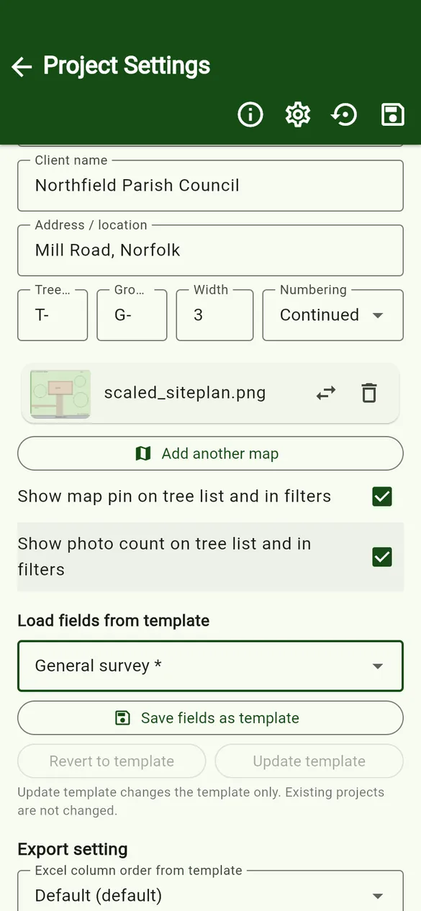
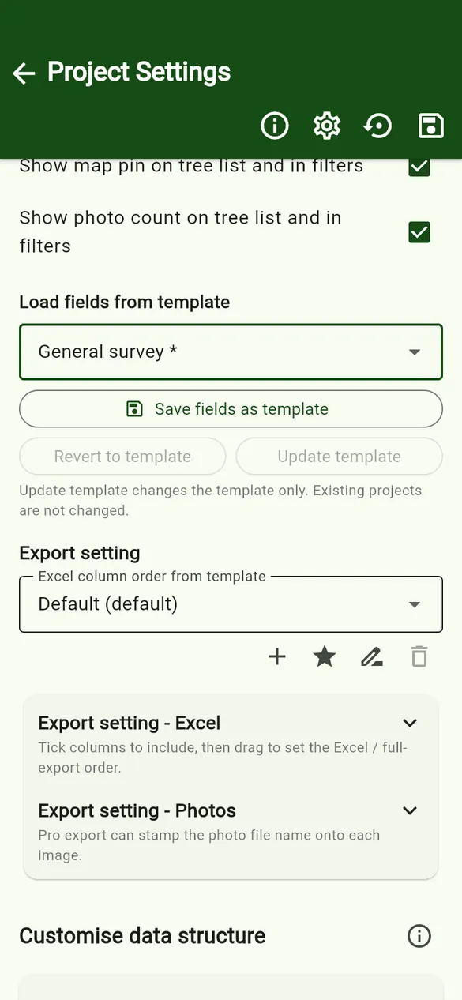
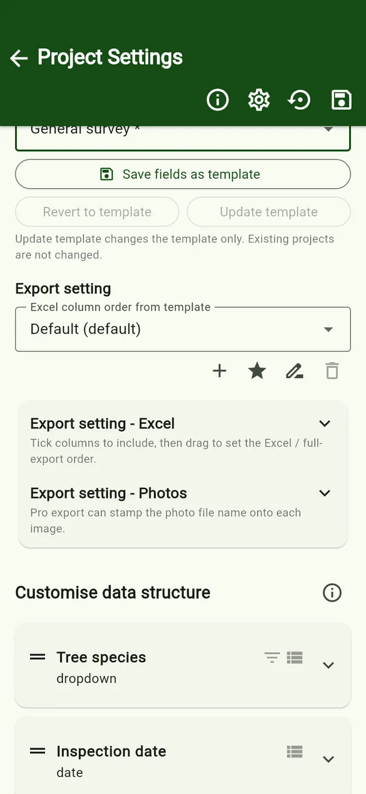
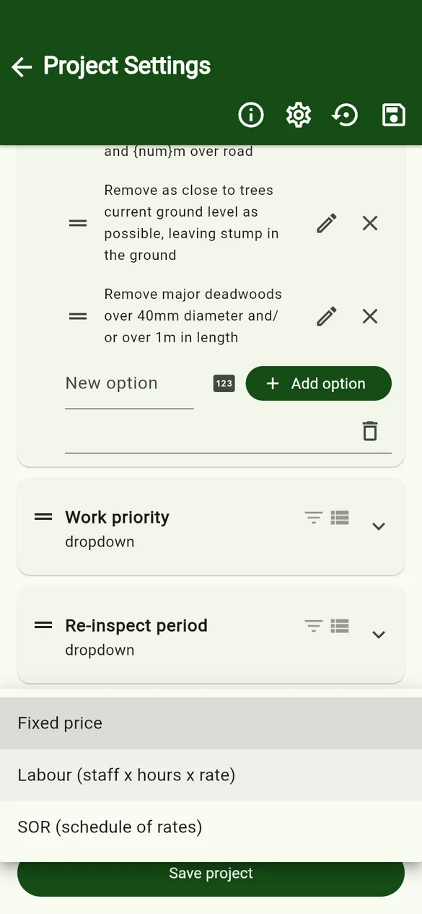
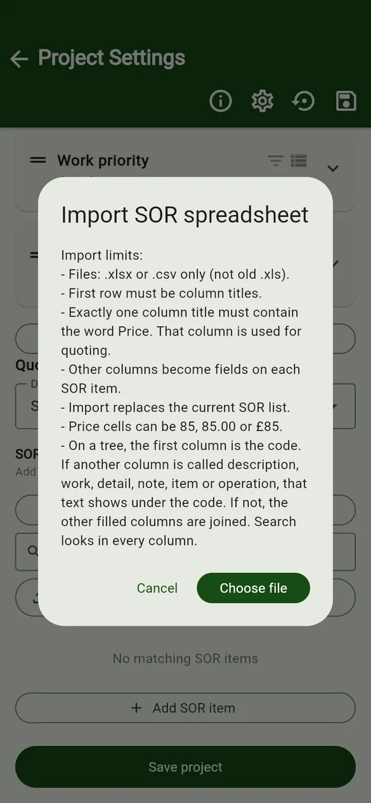
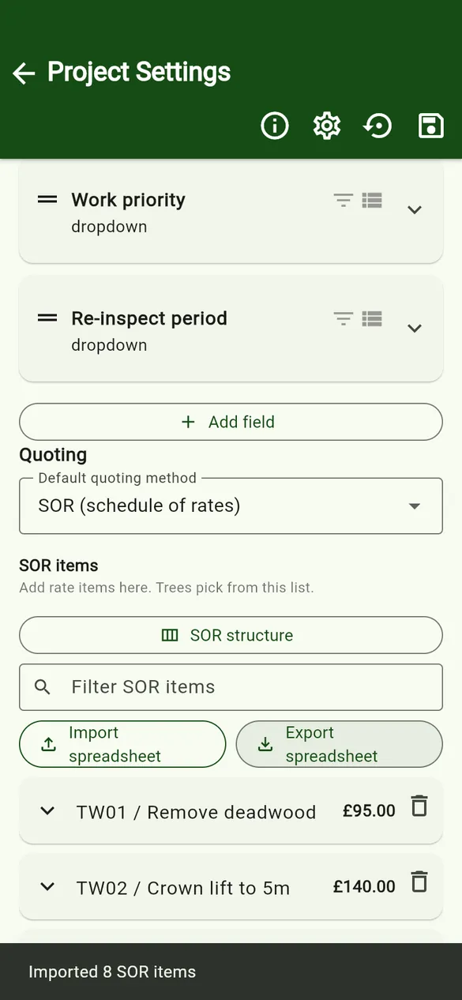
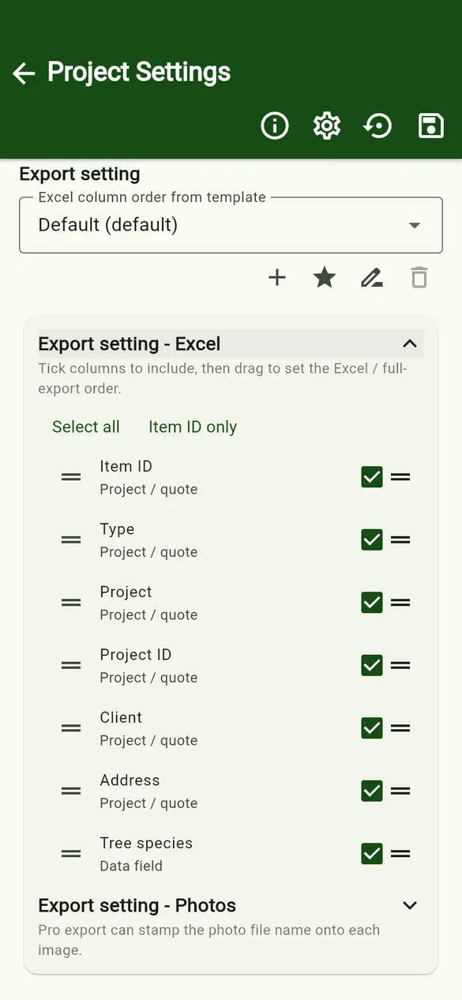

User guides › Project settings and SOR
Project settings and SOR
Project details, ID format, maps, templates, data structure, quoting, SOR lists and export settings.
Open a project and tap the Project settings icon (the sliders). Tap the save icon when you are done.



Project details and ID format
- Project name, Project ID, Client name, Address / location – shown on the tree list and available in exports.
- Tree / Group prefix, Width and Numbering (Continued or Separated) – used to number new items. See ID numbering.
- Show map pin on tree list and in filters and Show photo count on tree list and in filters.
Load or save a template
- Load fields from template applies a saved template. Its export settings, quote settings and SOR structure are loaded with it.
- Save fields as template saves this project’s set-up for new projects. Revert to template and Update template keep a project and its template in step. Updating a template changes the template only; existing projects are not changed.
Data structure
Customise data structure lists the fields on the tree form. Drag to reorder, tap a field to edit it, and use Add field. Tree species and inspection date are always included. See Templates and fields for field types and options.
Quoting PRO
Choose the default quoting method for new trees: Fixed price, Labour (staff × hours × rate) or SOR (schedule of rates). Labour shows an hourly rate. A tree can still use another method.

SOR items
- SOR structure sets the column titles for your SOR items (for example Code, Category, Description, Unit, Price). Save or load structures for other projects.
- + Add SOR item adds a single item. Tap an item to see or edit it; the bin deletes it.
- Import spreadsheet loads a whole list; Export spreadsheet saves the list to share it.
Import an SOR spreadsheet
- Files: .xlsx or .csv (not the old .xls).
- Row 1 must be column titles. Each later row is one SOR item.
- Exactly one column title must contain the word Price. Prices can be written 85, 85.00 or £85.
- Every other column becomes a field on each SOR item. On a tree, the first column is the code, and a column called description, work, detail, note, item or operation shows under it.
- Importing replaces the current SOR list.
- If the file has more than one sheet, the app asks which sheet to use.
Try it with the sample SOR list.


Export settings
- Export setting – Excel: tick the columns to include, then drag to set the order. Save different orders (for example a full survey and a works schedule) with the +, star (default), rename and delete icons.
- Export setting – Photos PRO: stamp the photo file name onto each exported image, and choose its position, colour and size.
